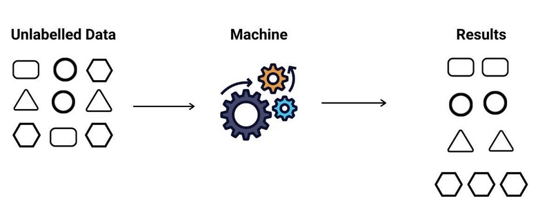
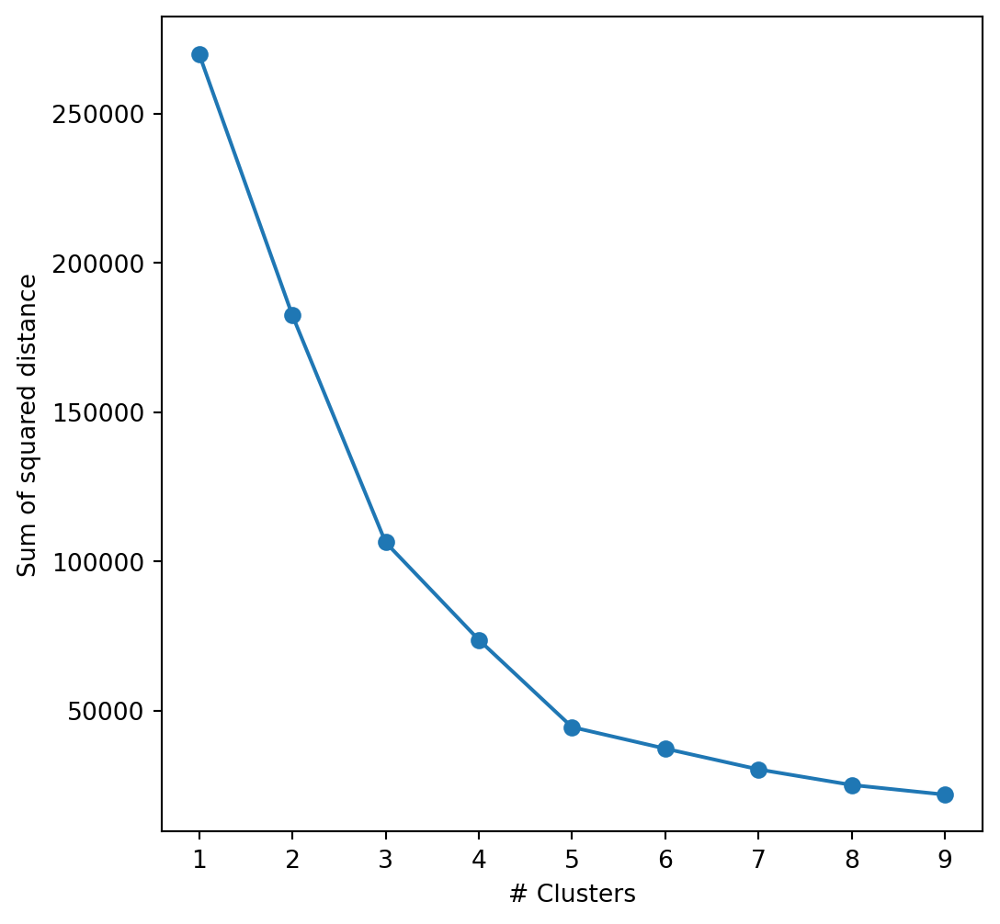
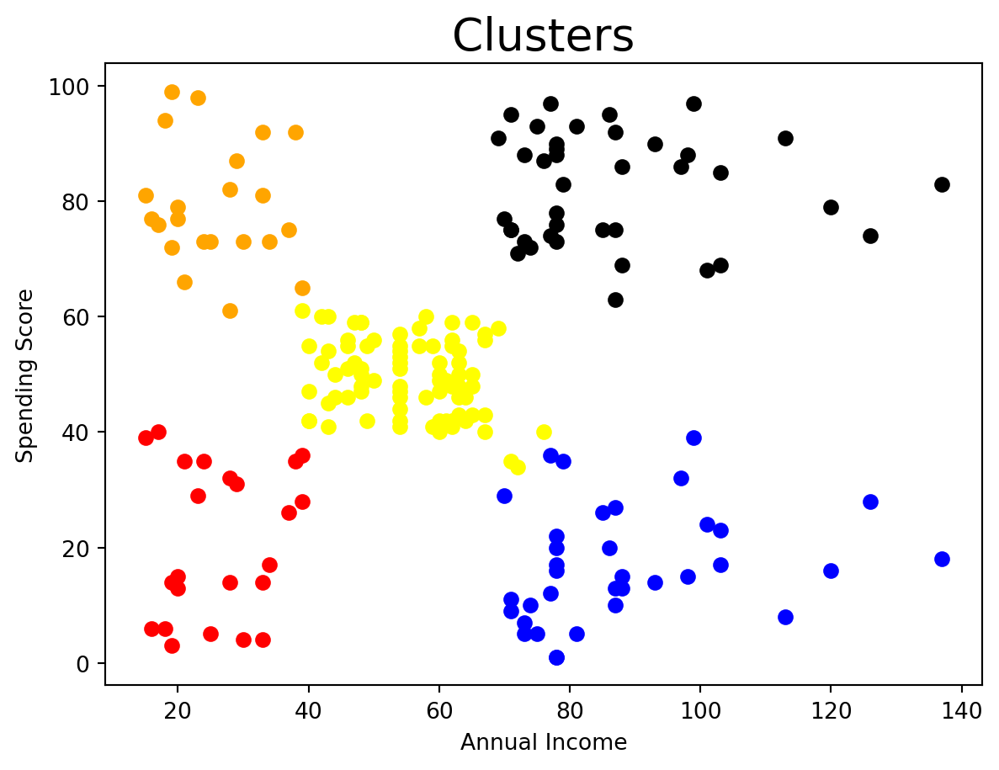
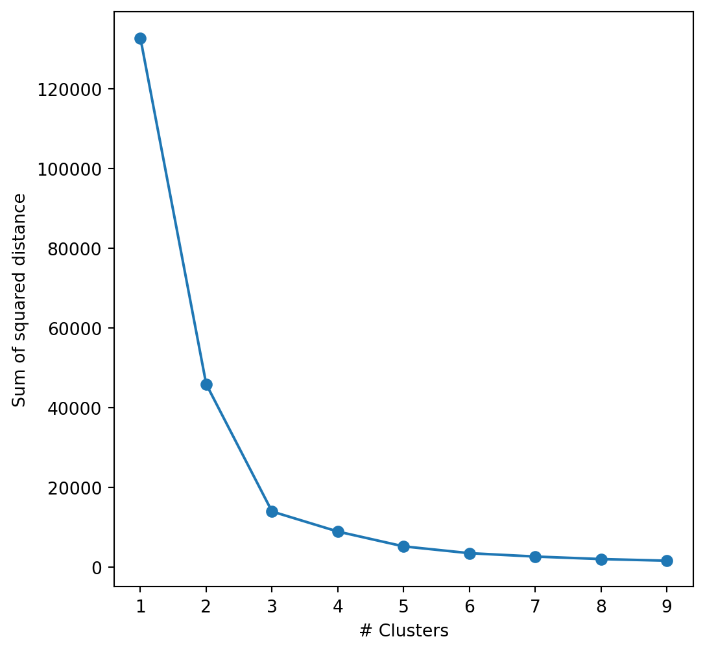
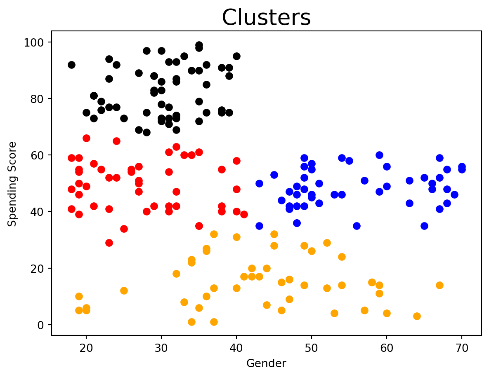

Unsupervised learning is a type of machine learning where an algorithm is trained on a dataset without labeled outputs or target values. The primary goal of unsupervised learning is to discover the inherent structure or organization in the data. It can be used for various tasks, including:
Clustering : Unsupervised learning algorithms can group data points into clusters based on similarities or shared characteristics. K-means clustering and hierarchical clustering are common techniques used for this purpose.
Dimensionality Reduction : Unsupervised learning can reduce the dimensionality of data by extracting relevant features or reducing noise. Principal Component Analysis (PCA) and t-SNE (t-distributed Stochastic Neighbor Embedding) are examples of dimensionality reduction techniques.
Anomaly Detection: Unsupervised learning can identify unusual or rare data points, which may indicate anomalies or outliers in the dataset.

Unsupervised Learning
Unsupervised learning is more exploratory in nature, as it doesn’t have specific target outcomes to achieve. It is commonly used in data analysis, pattern recognition, and data preprocessing to gain insights and structure from unlabelled data. Some of the most well-known unsupervised learning algorithms include:
K-Means Clustering: K-Means is a popular clustering algorithm that divides data points into ‘k’ clusters based on their similarity. It aims to minimize the distance between data points and the center of their respective clusters.
Hierarchical Clustering: This algorithm creates a hierarchical representation of clusters, with a tree-like structure called a dendrogram. It can be used to visualize how data points are grouped at different levels of granularity.
DBSCAN (Density-Based Spatial Clustering of Applications with Noise): DBSCAN groups data points based on their density, identifying dense regions as clusters and separating sparse regions as noise. It is effective at handling clusters of varying shapes and sizes.
Principal Component Analysis (PCA): PCA is a dimensionality reduction technique that identifies orthogonal axes (principal components) along which the data exhibits the most variance. It helps reduce the dimensionality of the data while preserving as much information as possible.
Self-Organizing Maps (SOM): SOM is a neural network-based technique that maps high-dimensional data onto a grid of lower-dimensional nodes, preserving the topology of the data.
These algorithms serve different purposes and are applied in a wide range of applications, from customer segmentation and image compression to outlier detection and data visualization. The choice of algorithm depends on the specific problem and the characteristics of the dataset you are working with.
Now lets take an example of customer segmentation using K-means clustering.
Customer Segmentation with K-means cluster
We have a dataset with customer information in a shopping mall. Using K-means clustering, we will try to find relationship between different attributes of a customer and how much they spend.
First of all, let us import the necessary classes and load the dataset.
import numpy as npimport pandas as pdimport matplotlib.pyplot as pltfrom sklearn import preprocessingfrom sklearn.cluster import KMeansimport warningswarnings.filterwarnings("ignore")db = pd.read_csv('Mall_Customers.csv')db.head()
ID
Gender
Age
Income (k$)
Spending Score (1-100)
0
1
Male
19
15
39
1
2
Male
21
15
81
2
3
Female
20
16
6
3
4
Female
23
16
77
4
5
Female
31
17
40
Since most of the data in our set is numeric, expect the Gender, let us convert that to a numeric value as well.
db["Gender"] = db.apply(lambda x: int(1) if ((x['Gender'])=="Male") elseint(0), axis=1)db.info()
So there are 200 non-null observations and no categorical variables anymore. All good, now what I want is to cluster the customers, and for this I’ll firstly choose to keep a database that finds relationship between income and spendings.
income_db = db.iloc[:,[3,4]]income_db.head()
Income (k$)
Spending Score (1-100)
0
15
39
1
15
81
2
16
6
3
16
77
4
17
40
The next step is to determine how many clusters are optimal; for this let’s use the Elbow method, testing number of clusters between 1 and 10.
cl = []list_k =list(range(1, 10))for k in list_k: kmeans = KMeans(n_clusters=k) kmeans.fit(income_db) cl.append(kmeans.inertia_)plt.figure(figsize=(6, 6))plt.plot(list_k, cl, '-o')plt.xlabel(r'# Clusters')plt.ylabel('Sum of squared distance')
Text(0, 0.5, 'Sum of squared distance')

The idea behind the elbow method is to find a balance between minimizing the within-cluster variance (making clusters more homogeneous) and avoiding an excessive number of clusters that might overfit the data. The elbow point indicates the number of clusters at which the improvement in the chosen metric starts to slow down significantly, suggesting that adding more clusters does not yield much better clustering quality. The elbow of the graph is at 5, so let us create 5 clusters.
<matplotlib.collections.PathCollection at 0x7fc118ddc3d0>

We can easily distinguish our five clusters. Based on this distinction, we can categorize our clients into the following groups: individuals with lower incomes fall into two categories, some of whom are frugal in their spending , while others are more extravagant. Similarly, those with higher incomes can be divided in a comparable manner: a cluster consists of individuals who maintain modest spending habits, while another cluster represents those who tend to spend liberally. Additionally, there is a middle category comprising individuals with moderate incomes who exhibit moderate spending levels.
Now lets us try to find correlations between Gender and Spendings.
gender_db = db.iloc[:,[1,4]]gender_db.head()cl = []list_k =list(range(1, 10))for k in list_k: kmeans = KMeans(n_clusters=k) kmeans.fit(gender_db) cl.append(kmeans.inertia_)plt.figure(figsize=(6, 6))plt.plot(list_k, cl, '-o')plt.xlabel(r'# Clusters')plt.ylabel('Sum of squared distance')
Text(0, 0.5, 'Sum of squared distance')

Since the elbow of the curve is at three now, let us form 3 clusters.
<matplotlib.collections.PathCollection at 0x7fc118dc8f50>

Alright, we can readily distinguish a set of individuals who maintain low spending levels, with most of them being over 30 years old. Among those under 30, we can further categorize them into two groups: those who exhibit moderate spending habits and those who are more extravagant.
Hence, we can conclude that Customer segmentation with K-means clustering helps businesses better understand their customer base, improve customer satisfaction, and increase the effectiveness of marketing efforts by tailoring strategies to the unique needs of each segment. It’s a valuable tool for businesses in various industries, such as retail, e-commerce, finance, and more.